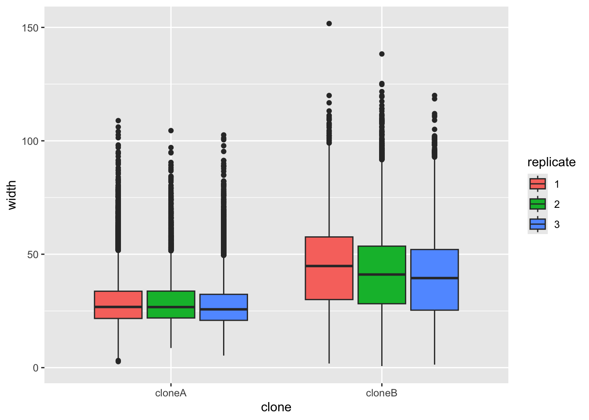
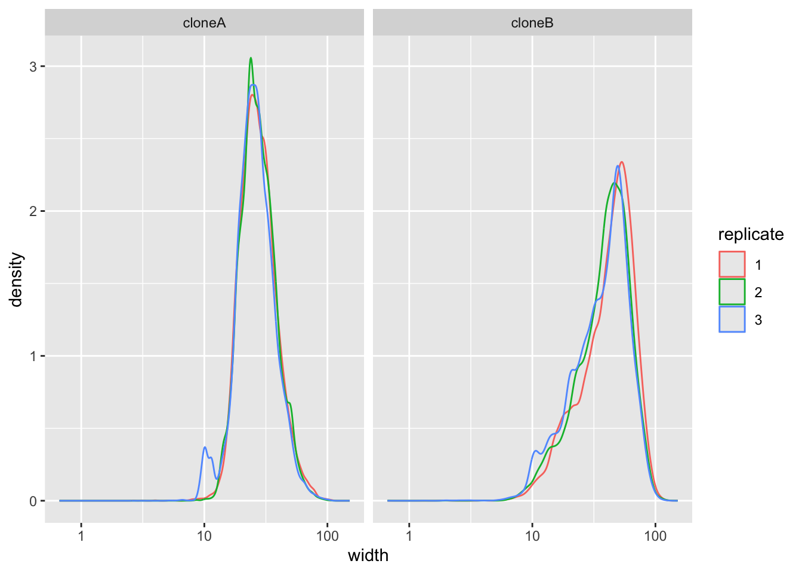

#Data Analysis 2: Cell Biology
#Date 2026-02-13BIO00066I Workshop 2
Cell Biology Data Analysis Workshop 2
Note
Workshop 1 for this module is here
Important
The data you will work on in these workshops is the complete data set for the report. This is not example data.
1 Learning objectives
In this workshop, you will learn technical skills and data science concepts.
Technical skills
- RStudio skills to manage, view and analyse large data sets
- How to create plots in RStudio to assist with exploring and interpreting data
- How to make your data analysis reproducible and well-explained
Thinking like a data scientist
- How to interpret data with care
- How to integrate knowledge from laboratory work and computational analysis
The Module learning outcomes can be seen here.
2 Introduction
Philosophy
Workshops are not a test. It’s OK to make mistakes. It’s OK to need help. You should be familiar with independent study content before the workshop, but you don’t need to understand every detail. The workshop will help you to build and consolidate your understanding. Tips:
- there are no stupid questions (ask us anything!)
- don’t worry about making mistakes (we all make mistakes)
- discuss code with your neighbours and with the staff
- outside of workshop times, google is a good resource
2.1 The biology
Today we will look at some data from mesenchymal stem cells (MSCs, sometimes called stromal cells). MCSs are multipotent cells, than can differentiate into many kinds of mesenchymal cells, including bone, cartilage and fat cells. They are not pluripotent, in that they do have limits about how they differentiate.
MSCs are also:
- immuno-modulatory (they make cytokines)
- heterogeneous (they have subpopulations that are different from each other)
The MSCs we are looking at are from bone marrow femoral head tissues (from the hip bone). These MSCs were immortalised (by transforming them with a telomerase gene), and then cloned by limiting dilution. We will compare the data on cell shape and size from just two clones, both obtained from one person’s femoral head tissues. Each clone was derived from a single cell from the person. We call these two clones clone A and clone B. Today, we will use our data analysis skills to explore how these cell line differ. Remember, these two cell lines were both obtained from one person. You probably have these kinds of MSCs too.
2.2 Research questions
- What parameters do we have in the data obtained from the Livecyte machine/method?
- Which parameters differ between the clones?
- Which parameters are correlated?
2.3 The data
The data we have today are derived from live cell imaging of mesenchymal stem cells with a Livecyte microscope and the software it has. Each clones was cultured and the microscope captured cell shape and size information for thousands of cells from each clone (clone A and clone B). For each clone, we measured three biological replicates.
The Livecyte tracked each cell every 23 minutes, giving each data point a tracking ID (which tracks a unique cell ‘object’) and a lineage ID, which recalls the lineage of cells as they divide. For example, if cell 1, divided into cell 1A and cell 1B, they are all recorded by the Livecyte as being part of lineage ID 1.
This video shows what Livecyte can do (perhaps turn the sound down, or watch later).
Biological replicates and technical replicates
A biological replicate repeats an experiment from different cell types, tissue types, or organisms to see if similar results can be observed.
Technical replicates are repeat measurements of the same biological material, which help to show how much variation comes from the equipment or different methods (rather from the biology).
Our replicates are almost biological replicates, because we grew the cells three times.
Thinking like a data scientist
Data science can be challenging when you first start. But data science does have core concepts, like any other science.
- Consider the motivation or scientific question before drawing a plot
- Reflect on how the plot or analysis addresses the scientific question
- Use each plot to adapt, to inspire new research questions and new inquiries
- Ensure that your scripts are reproducible and clearly commented
- Consider what the results tell you about the biology
3 Part 1: Loading data and simple plotting
Develop your R script, carefully.
As we run through the exercises, copy the code to your script. You can copy the code by clicking on the ‘clipboard’ symbol at the top right of the grey code chunks.
#Comments In R scripts, lines that start with the hash symbol (#) are comments. Add comments so you can remember what this code does. Commenting code makes it readable, for you and anyone else. Good data science includes clearly commented code.
3.1 Getting started
- Start RStudio from the Start menu
- Open your RStudio project using the dropdown menu at the very top right of the RStudio window.
- Make a new script then save it with a sensible name that will help you to know later what is in this file.
BIO00066I-workshop2.Rwould work. - Add a comment to the script so you know what it is about, for example
- Clear all the previous data, and load
tidyversepackage by adding these lines to your script:
- Finally load another library that allows us to make multi-part plots (this can be useful sometimes). #we need this to make pretty plots with the ‘ggarrange’ package
Important
The data you will work on in these workshops is the complete data set for the report. This is not example data.
- Make sure all these lines of code are in your script, with comments.
- Save the script.
3.2 Loading the data
In workshop 1, we showed you how to import data from files. Today, we load a tab-separated value (TSV) file from a website:
cells <-read_tsv(url("https://djeffares.github.io/BIO66I/data/all-cell-data-FFT.filtered.2024-02-22.tsv"),
col_types = cols(
clone = col_factor(),
replicate = col_factor(),
tracking.id=col_factor(),
lineage.id=col_factor()
)
)
About read_tsv
We use the read_tsv function to read the tab-separated value file. Clicking on the link in the read_tsv takes you to a website about this function. All the code chunks in these workshops have links like this. The clone = col_factor(),replicate = col_factor() etc let’s R know that we want these columns to be factors, rather than numeric values. Factors are used to represent categorical data.
3.3 Exploring the data
It is important to know what data you have. How many rows and columns etc. There are many ways to do this in R. Here are some of our favourites. Copy and past these into your R script, and try them out.
You may have noticed that we have two clones (cloneA and cloneB). For each clone, we have three replicates. For each replicate, we have many readings of cell widths, cell volume, cell sphericity, and so on.
Which ‘data peeking’ method of do you like the best?
We suggest you take a note of this, and use it regularly. It is important to know your data.
3.4 Cleaning up
When you ran names(cells) you will have seen many metrics from the Livecyte software. We don’t need all these, and the movement metrics them are unreliable, so let’s remove them. It is simple to remove columns of data, using the select function, like so:
#see what we have
names(cells)
#remove all the movement metrics (which are not reliable)
cells <- select(cells,
-position.x,
-position.y,
-pixel.position.x,
-pixel.position.y,
-displacement,
-instantaneous.velocity,
-instantaneous.velocity.x,
-instantaneous.velocity.y,
-track.length
)
#check that our data is simpler
names(cells)In the select function, using the minus sign - before a column name removes it. We can also also use select to define which columns to keep, by omitting the -. For example cells <- select(cells, clone, replicate, volume) will only keep the columns we listed.
3.5 Save your work regularly
Now save your data and save your script. This command will save all the variables you have loaded, or created so far:
#save all my stuff
save.image("BIO00066I-workshop2.Rda")You can load all the data again with:
#load all my stuff from last time
load("BIO00066I-workshop2.Rda")3.6 Exploring the data with plots
A good way to explore data is to use plots. In this case we want to compare cloneA to cloneB. But first, lets look at what data we have on each clone. We’ll use the str() function, which displays the structure of an R object (ie: shows us what’s inside).
str(cells)You will see that volume, mean.thickness, radius, area, sphericity, length, dry.mass, length.to.width and width are all numeric variables. We can use these to make plots.
Let’s start by plotting the width of the cells, to see if there are differences between clone A and clone B. We will use ggplot to make a boxplot (geom_boxplot()) to compare the two clones. We use a small ‘trick’ here: by including fill=replicate we force R to make different plots for each replicate.
ggplot(cells,aes(x=clone,y=width,fill=replicate))+
geom_boxplot()
It does look like clone A and clone B differ consistently in width, with all repeats. To prove this, we would like to do a statistical test. A Student’s t-Test t.test would work. But t-Test’s assume that the data are normally distributed (like a bell curve). We can test this approximately by plotting the data with a density plot.
# make a density plot of the width data
# using colour = replicate makes separate lines for each replicate
ggplot(cells, aes(x = width,colour = replicate)) +
geom_density()+
facet_wrap(~clone)+ #facet_wrap makes separate plots for each clone
scale_x_log10() #the log10 scale makes this plot easier to read
It doesn’t look perfectly normally distributed, so let’s play is safe and use a nonparametric test.
# Test if cloneA and cloneB have statistically different widths
# Use Wilcoxon rank sum test, which does not assume normal distribution
wilcox.test(width ~ clone, data = cells)
Wilcoxon rank sum test with continuity correction
data: width by clone
W = 657964994, p-value < 2.2e-16
alternative hypothesis: true location shift is not equal to 0Because the p-value is very low (< 2.2e-16), this means the null hypothesis (that both sets of numbers come from the same population) is very unlikely to be true.
You can add the results of nonparametric tests to ggplot, by adding stat_compare_means() to our plot. Note that below we do not force R to split up the replicates as we did above.
ggplot(cells,aes(x=clone,y=width))+
geom_boxplot()+
stat_compare_means()3.7 Exploring all the data
As you will have seen, we have many numeric variables in our data. We could make a plot for each one, to see if there are differences between the clones, but there is a quicker way to explore the data in R.
We can use a loop to compare all the numeric variables between the clones. This is a bit more advanced, but it is a good way to explore the data quickly
First, see which columns in the cells data frame are numeric using the str() function, which shows the structure of an R object.
str(cells) #shows the type of each columntibble [101,042 × 15] (S3: tbl_df/tbl/data.frame)
$ clone : Factor w/ 2 levels "cloneA","cloneB": 1 1 1 1 1 1 1 1 1 1 ...
$ replicate : Factor w/ 3 levels "1","2","3": 1 1 1 1 1 1 1 1 1 1 ...
$ frame : num [1:101042] 1 2 3 4 1 2 3 4 5 6 ...
$ tracking.id : Factor w/ 6610 levels "5","6","7","8",..: 1 1 1 1 2 2 2 2 2 2 ...
$ lineage.id : Factor w/ 6610 levels "5","6","7","8",..: 1 1 1 1 2 2 2 2 2 2 ...
$ volume : num [1:101042] 1770 1820 1848 1874 1652 ...
$ mean.thickness : num [1:101042] 3.06 1.59 1.32 1.23 1.21 ...
$ radius : num [1:101042] 13.6 19.1 21.1 22 20.9 ...
$ area : num [1:101042] 578 1145 1399 1518 1370 ...
$ sphericity : num [1:101042] 0.581 0.306 0.253 0.235 0.241 ...
$ length : num [1:101042] 29.9 62.5 86.6 116 78.5 ...
$ width : num [1:101042] 23.7 29.3 23.8 25.8 30.3 ...
$ orientation : num [1:101042] 98.7 99.1 116.6 124.5 107.9 ...
$ dry.mass : num [1:101042] 443 455 462 469 413 ...
$ length.to.width: num [1:101042] 1.26 2.14 3.64 4.49 2.59 ...You will see that volume, is numeric because it has : num in the output
volume : num [1:101042]
As are all the variable below it, but clone and replicate are factors, because they have : Factor in the output.
3.7.1 Compare all the numeric variables between the clones
Now we create the loop to compare all the numeric variables.
First, separate the data for clone A and clone B
And get list of the numeric column names
#get the names of the numeric columns
numeric.columns <- cells |>
select(where(is.numeric)) |>
names()
#see what we have
numeric.columns [1] "frame" "volume" "mean.thickness" "radius"
[5] "area" "sphericity" "length" "width"
[9] "orientation" "dry.mass" "length.to.width"Next we create an empty data frame to store results.
Now we loop through each numeric variable. For each one, we calculate the medians (clone A and clone B) and run a wilcox.test to see if they differ significantly, then add the results to our clone.comparisons data frame.
Run the loop code all at once
Otherwise you will get errors. You can copy and paste the whole loop code into your script, then select all the loop code, run it with Ctrl + Enter keyboard shortcut.
Here is the loop code:
#loop through each numeric column
for(column.name in numeric.columns) {
#calculate median for clone A
cloneA.median <- median(cloneA.data[[column.name]], na.rm = TRUE)
#calculate median for clone B
cloneB.median <- median(cloneB.data[[column.name]], na.rm = TRUE)
#calculate the median ratio (cloneA.median / cloneB.median)
ratio <- cloneA.median / cloneB.median
#run wilcox test comparing the two clones for this variable
test.result <- wilcox.test(cells[[column.name]] ~ cells$clone)
#extract the p-value
p.val <- test.result$p.value
#add this row to our results table
new.row <- data.frame(
variable = column.name,
cloneA.median = signif(cloneA.median,2),
cloneB.median = signif(cloneB.median,2),
median.ratio = signif(ratio,2),
p.value = p.val
)
#add the new.row to the clone.comparisons data frame
clone.comparisons <- rbind(clone.comparisons, new.row)
}Now, look at the results with view(clone.comparisons)
While this was relatively complex code, it does show us the big picture for how the two clones differ. Feel free to plot any other cell size metrics, either today, or in your report.
4 Part 2: Principle component analysis
While we could plot many different variables to determine if clones A and B are different, but this does not summarise the data very well in the end. To describe all the data, we could use a principle component analysis (PCA).
Principal component analysis, or PCA, reduces the number of dimensions in large datasets to principal components that retain most of the original information. It does this by transforming correlated variables into a smaller set of variables, called principal components. Usually, we look at only the first two principal components (PC1, PC2), because they capture the most of the information in the data (but sometimes we look at more, PC3, PC4, etc.).
For now, that is all you need to understand about PCA, but I link to some YouTube videos below. These are worth looking at if you want to progress in data science later in your degree.
4.1 Prepare data for PCA
First we select the numeric columns and we remove any rows with NA values:
4.2 Calculate PCA coordinates
Now we calculate PCA coordinates with the prcomp() function:
In the summary pca_result you will see the coordinates of PC1, PC2, etc. Now extract PC scores and combine them with clone information for plotting:
# extract PCA scores and combine with clone and replicate info
pca_scores <- as.data.frame(pca_result$x) |>
bind_cols(cells_for_pca |> select(clone, replicate))4.3 Plot PCA coordinates
Now lets make a plot:
# plot PCA scores with ggplot, coloring by clone
# use alpha = 0.1 to make points semi-transparent
# use size = 4 to make points larger
# save the plot as pca.plot
pca.plot <- ggplot(pca_scores, aes(x = PC1, y = PC2, color = clone, fill = clone)) +
geom_point(alpha = 0.1, size = 4)
# view the plot
pca.plotWe can see a that PCA does separate the two clones well, but its not a very nice plot, for several reasons. First, there are so many points that they are all overlapping, and we can’t see the shape of the data. Second, we have not shown the replicates separately, so we can’t see if the replicates are consistent.
So lets fix these problems.
First lets downsample the data to retain only 3000 cells per clone for better visualization. We use slice_sample() which randomly selects rows of data.
# downsample the PCA scores to 3000 cells per clone
pca_scores_sample <- pca_scores |>
group_by(clone) |>
slice_sample(n = 3000) |>
ungroup()And make the PCA plot with the down sampled data:
# make the plot
pca.plot <- ggplot(pca_scores_sample,
aes(x = PC1, y = PC2, color = clone, fill = clone)) +
geom_point(alpha = 0.1, size = 4)
# view the plot
pca.plotFinally, lets improve and save the plot. We can do this by adding elements to pca.plot:
# make the plot
# stat_ellipse adds an ellipse to show the shape of the data
# scale_color_manual sets the colors for the clones
# facet_wrap makes separate plots for each replicate
# theme_classic() makes the plot look nicer
pca.plot +
stat_ellipse(geom = "polygon", alpha = 0.1, linewidth = 1.2) +
scale_color_manual(values = c("cloneA" = "red", "cloneB" = "blue"))+
facet_wrap(~replicate)+
theme_classic2()5 Reflection
5.1 Summary
Today, we started with loading a large table of data about clone A and clone B. This data was derived from live cell imaging of mesenchymal stem cells, using the Livecyte microscope and software.
The data set was large. It contained more than 100,000 rows (cell measurements), and 12 parameters about cell shape and size. We used R to explore the data, and to compare the two clones. We did some initial box plots, then made a summary table. Finally, we performed a principle component analysis (PCA) to summarise the data in a single plot.
5.2 Things to consider
- What was the value of making the boxplot of width, in your view?
- What did the density plot of width tell us about this metric?
- Why didn’t we carry on making boxplots for all the other metrics?
- Now that we have the summary table, we could make more boxplots to explore the differences between the clones. Which metric would you plot next?
- Did the PCA plot differentiate clone A and clone B?
Note that principle component analysis (PCA) can be used to summarise any kind of data.
6 The end
This is the end of the workshop for today. We provide some consolidation exercises, extra material and advice about the R Studio project below.
Download Code
You can download all the R code from this workshop as a single script file: workshop2.R
7 After the workshop
Look at your script again. Add some comments, so that the next time you look at it, it will make more sense to you. Also, have a go at the consolidation exercises below.
7.1 Understanding PCA
You don’t need a detailed understanding of PCA for this module, but an understanding of PCA may help you in the future. Here are some videos that explain principle component analysis (PCA).
- A nice simple explanation (4 minutes)
- A very intuitive explanation (20 minutes)
- A mathematical explanation for those who like maths (20 minutes)
7.2 Consolidation exercises
Making plots with ggplot
No matter what shape plot you want, ggplot uses the same syntax.
- Start by telling R what data you want to use like this:
ggplot(some_data_frame,aes(x=x_axis_data, y=y_axis_data) +
In this line, x_axis_data and y_axis_data are columns of some_data_frame.
- Then define what the shape plot you want (the ‘geometry’):
geom_boxplot(),geom_histogram()etc. - Add extra things to customise your plot, eg:
xlab("my x axis label")
How to cite packages
If you use a package in your work, you should cite it so that your code is fully transparent (for you, and others). You’ll also get points for citing packages in your Rstudio project. You can obtain a nicely formatted citation for a package like so:
print(citation("tidyverse"), style = "text")
7.2.1 Violin plots geom_violin
- We used
geom_boxplot()to show the differences between categories (clone A and clone B). Trygeom_violininstead. Which one do you prefer?
ggplot(cells,aes(x=clone,y=width,fill=replicate))+
geom_violin()- Now adjust the title with
ggtitle(label), and the axis labels withxlab(label)andylab(label), and the theme (the general style of the plot), withtheme_classic(). There are many themes for ggplot, which you can see here. Use whatever theme you feel makes the data clear and simple.
# a violin plot with title, axis labels and a theme
ggplot(cells,aes(x=clone,y=length,fill=replicate))+
geom_violin()+
ggtitle("put your title here!")+
xlab("my X axis label")+
ylab("my Y axis label")+
theme_classic()7.3 Planning for your report
For this module, 30% of the grade is for an R Studio project. The script that you are creating now is the start of this. Here is some information that will help you to prepare to submit your project.
For the R Studio project
Create a logical folder structure for your analysis. Your submission should include the script you used for your work, any accessory functions and the data itself. Your script should be well-commented, well-organised and follow good practice in use of spacing, indentation and variable naming. It should include all the code required to reproduce data import and formatting as well as the summary information, analyses and figures in your report.